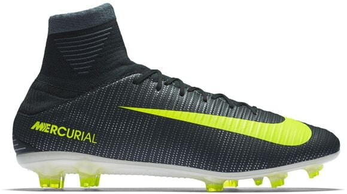

Voor bijna elke sport heb je spullen nodig, ook voor voetbal. Je kan hele duren dingen kopen, maar daar ga je per definitie niet beter door voetballen. Dat licht echt aan je zelf. De basis spullen die je zeker voor voetbal nodig hebt zijn:
Scheenbeschermers
Voetbalschoenen
Voetbalsokken
T-shirt en broekje
Voetbal.